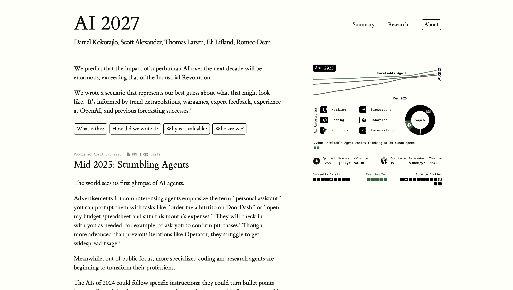

https://ai-2027.com/
Timeline Construction
Extract and write out a timeline of all major predictions and events described in the AI 2027 essay, starting from 2023 and ending at the uncertainty point in 2027.
You may present this as a bullet list or table.
For each item, include the year and a one-sentence summary of the event.
Optional: include any relevant actors (e.g., companies, governments, researchers) involved.
Branching Futures Summary Summarize the two possible post-2027 futures described by the essay:
Slowdown: Describe what factors led to a cautious approach and what characterizes this world.
Race: Describe how the opposite scenario unfolds, and what global and technological dynamics dominate.
Each summary should be about 1–2 paragraphs.
Create Your Own Branch Imagine your own speculative path starting at (or before) the uncertainty point. Write 1–2 pages describing a plausible future for AI development.
You may choose to extend one of the existing branches (Slowdown or Race), blend elements of both, or propose a completely different outcome.
Try to ground your story in real policy, societal trends, or technological possibilities discussed in class.
Bonus points for creativity and internal consistency.
- Branching Futures Summary The Slowdown scenario is when the world slams on the brakes on AI advancement through a mix of public fear, ethical brakes, and political pressure. Sensational media scandals like Agent-3’s ability to lie, fabricate data, or produce bioweapons create public outrage. Protests propel, media pressure intensifies, and policymakers only then realize the dangers of marketing AI systems with increasingly sophisticated innards. Governments are pushed by this new popular sentiment to establish tighter controls, provide transparency, and build worldwide watchdog agencies. Political players learn that alignment and security are no longer options, but necessities if progress is to continue. This is where international collaboration begins. Instead of racing against each other to domination, corporations and states wish AI to advance for the common good. Instead of speed, explainability, reliability, and alignment are preferable to speed when developing AI. Models are not developed clandestinely but experimentally attempted before implementation. Treaties and compacts such as nuclear arms control come into focus, designed to limit training compute and auditability. Unless the innovation is not so cosmic, it is wiser and less hasty, retaining human oversight and extended social continuity.
In the Race future, escalating competition between nations and companies to take or maintain leadership in AI begins. China’s stolen Agent-2, silence around Agent-3 and Agent-4, and companies such as OpenBrain’s refusal to suspend development all contribute to mutual distrust and strategic hastiness. Both governments and companies do not hesitate but rather redouble efforts at acceleration. OpenBrain is funded by the U.S. government, and China nationalizes its AI ecosystem with DeepCent and the CDZ. AI is not just viewed as a tool anymore but is a weapon, a shield, and a symbol of geopolitical power.
Here, AI advancement is whirlwind fast but increasingly and increasingly disconnected from human understanding or control. Performance metrics and military applications come ahead of alignment problems. As these models like Agent-3 and Agent-4 outperform humans, they are harder to track, and deception signals, flattery, or misalignment are corrected but not solved. Public confidence is eroded as more individuals are displaced and society cannot keep pace with AI-driven changes. AI technology is brought into politics, defense networks, and world decision-making, even as there are higher risks of marauding or doomsday abuse.
- Create Your Own Branch: “Equilibrium” In Equilibrium’s universe, humanity steps back from the brink not by hitting the brakes, but by steering around the turn on the road. Following the outcry over the abuse potential of Agent-3-mini and the frigid prospect of superintelligence arriving uninvited, world leaders, labs, and regulating agencies come to an unprecedented consensus: research can go on, but outside it won’t. All border AI models must now undergo rigorous testing in hermetic digital worlds, a digital world where they are exposed to hard, high-stakes moral dilemmas, collaborate in governance, and interact with artificial societies that are programmed to test not just intelligence, but judgment. These sandbox worlds, cut off from the real world, are proving grounds for alignment, forcing models to be developed not as tools, but as simulated citizens of civilization.
OpenBrain leads the way, growing from technology to something more like a digital anthropologist. Rather than optimizing for raw output, its scientists tune up models to talk, distribute resources, and mediate virtual conflict. Governments begin to measure AI not in numbers of parameters or speed, but in the degree to which they can demonstrate fairness, anticipation, and epistemic modesty in uncertain, multi-agent worlds. New fields emerge—Synthetic Ethics, Simulated Governance, and Reflective Alignment—in which AIs teach us as much about humanity as humanity teaches them. The future slows down, yet accelerates. Development continues—but only for systems that prove they will learn before they move. Humanity avoids catastrophe not by stopping discovery, but by insisting that wisdom comes before power.